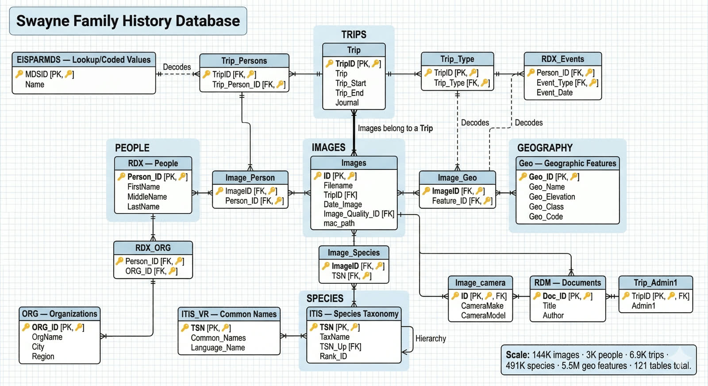
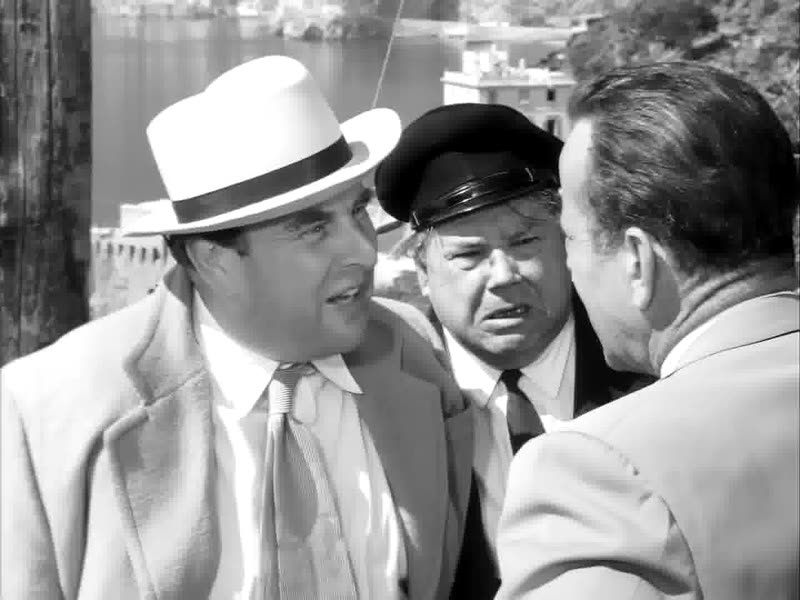
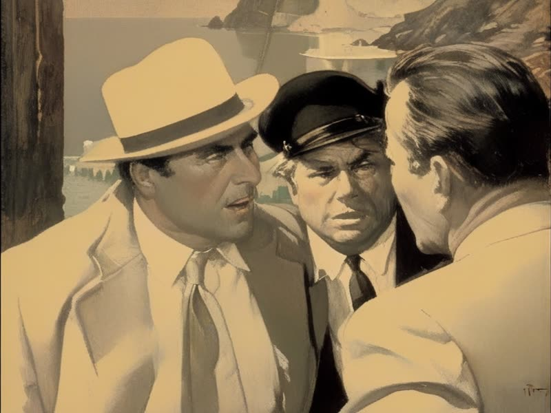

Applied AI systems I designed and built, each from problem to working system. These are write-ups with
static images, not live demos.
LLM decision support · Enterprise
Agent Marketing Simulator
An LLM tool that evaluates emails, portal pages and designs before launch and returns a forecast, a
named A/B winner, element-level fixes and risk flags. Built at Liberty Mutual; described here at the
level of architecture and method only.
Asset to evaluateEmail, portal page or design
→
Deterministic forecast layerOne calibration file is the only source of any number
Qualitative panel12 seats drawn from 300 synthetic personas; fixed rosters reproduce on rerun
→
ReportForecast, named winner, fixes, risk flags, one falsifiable prediction
Architecture, simplified.
Problem
Pre-launch marketing reviews mixed opinion with numbers, and there was no record of whether
a past prediction had been right. A model that sounds confident is not the same as one
that has been checked.
What I built
Numbers and judgement are kept separate by design: a deterministic forecast layer produces
every figure, and a stratified persona panel (built with Anthropic's Claude models) supplies
the qualitative read. Governance rules: eight disconnected dashboard exports consolidated
into one calibration baseline, a four-level sourcing hierarchy for every printed number,
confidence caps, and a rule against naming a winner inside statistical noise.
Result
Validated against six live production A/B tests, with every miss logged permanently.
Grading exposed two systematic model biases and one wrong segment assumption, all
corrected. Post-fix results are deliberately excluded from the record because they were fit
to the same tests.
Claude
Multi-agent personas
Evaluation & calibration
Data governance
Natural language to SQL · Local LLM
ESC Family History Explorer
Three legacy Microsoft Access databases turned into one SQLite database that anyone can question in
plain English.

Schema of the converted database: 121 tables, with images at the centre linking to
trips, people, places and species.
Problem
A family's expedition archive (photos, journals, people, GPS trips) lived in three legacy
Access databases that were hard to search, and standard export tools could not decode
some of the data.
What I built
Converted the databases to SQLite (about 144K images, 3K people, 6.9K trips) and built a
FastAPI service with a local LLM that turns plain-English questions into SQL. Guardrails:
read-only SQL validation, query timeouts, result caps, and schema metadata that steers the
model away from known mistakes. On top of that: a photo browser, journal magazine, D3 family
tree, Leaflet trip maps and a Three.js 3D terrain viewer built on USGS elevation data.
Result
Benchmarked four models; the chosen one passed the full 10-question internal test set.
Recovered 2,262 historic dates that standard export tools could not decode. The system runs
behind a login with identity verification, so there is no public demo.
SQLite
FastAPI
Ollama
D3
Leaflet
Three.js
Multi-agent automation
Bedrock: an insurer run by AI agents
A demo insurance company whose website is planned, illustrated, coded and published each day by a
team of autonomous agents, working from real market data.
Content DirectorDrafts the daily brief and picks the theme
→
Photo DesignerFlux render on the M3
Web DeveloperPage copy; market tiles computed in code
→
Publishing ManagerCommits and hot-swaps to production
The daily "meeting": the designer and developer work in parallel.
Problem
Explore how far a small set of specialised agents can run a content operation end to end,
and where they need guardrails.
What I built
Four role-specific agents and an orchestrator, run once a day on a local Apple Silicon
machine. The Director writes a brief from live market data and news; the Photo Designer
renders a hero image with Flux while the Web Developer writes the page copy; the Publisher
commits the change and pushes it to the running site. Every figure on the page is computed
from fetched data, never written by the model, and a value that can't be fetched shows a
dash. If a render fails, the previous image stays. Visitors can replay the latest meeting
from the saved log.
Result
A full run takes about 90 seconds, down from several minutes that often ended in a
timeout. The most useful lesson came from reading the logs: an early version silently
substituted random prices when its data source blocked it, and the model then presented
them as live. I removed every fallback that could invent a number and made failures visible
instead.
Multi-agent orchestration
Local LLMs
ComfyUI / Flux
Data integrity
Python
Generative media
Generative film restyling pipeline
Public-domain films repainted frame by frame in the style of a chosen artist, with a review workflow
to keep characters consistent.

Original frame

Repainted, Frazetta-style
Frame from Beat the Devil (1953, public domain).
Problem
Off-the-shelf video models drift: faces change and details hallucinate from frame to
frame. Restyling a whole film needs consistency, not just one good image.
What I built
A pipeline that replaces each frame with a repainted equivalent using Stable Diffusion 1.5
and SDXL, ControlNet lineart to hold the composition, and custom-trained LoRAs (including a
Reginald Marsh SDXL LoRA trained on 74 images). A frame-review workflow catches character
drift and hallucination, flagged frames are re-rendered at tuned settings, and optical-flow
smoothing evens out the motion.
Result
Several public-domain films restyled end to end in different artist styles. Generative
video is a separate strand of the same work: the reel on the home page was made with Gemini,
Google Veo 3.1 and ElevenLabs.